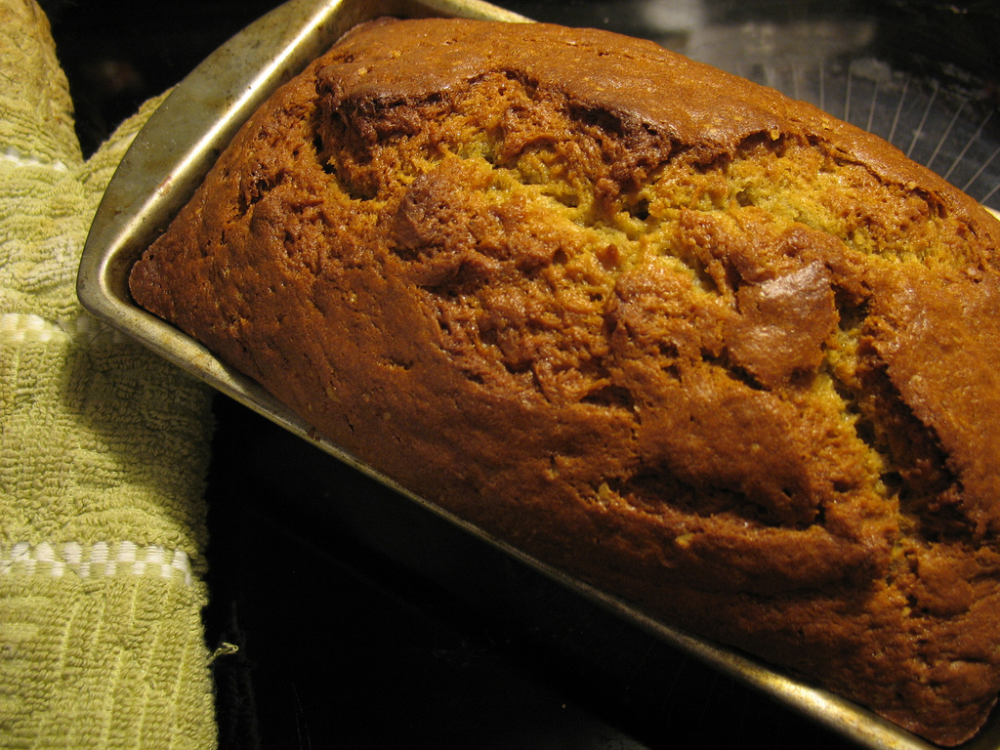

Banana Bread

Description
This recipe is an adaptation of a recipe originally from
The Berry Hill Gourmet,
which was a small book published by the Berry Hill PTA in 1998.
This is sincerely the best banana bread you'll ever have.
Ingredients
- ⅔ c. sugar
- 1 c. flour
- 2 tsp. baking soda
- ½ tsp. salt
- ⅓ c. oil (or less
- 1 egg
- ¼ c. water
- 1 c. mashed banana (2 to 2½ bananas)
- 1 tsp. vanilla
Steps
- Mix all of the preceding.
- Bake at 350° for 45 minutes.
- Put walnuts or pecans on top (optional).